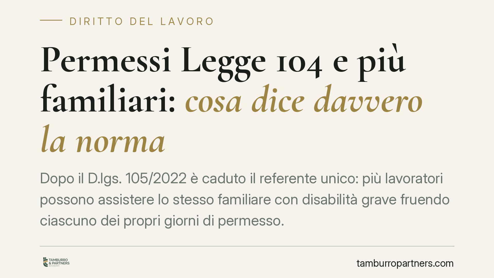

Permessi Legge 104 e più familiari: cosa dice davvero la norma
Dopo il D.lgs. 105/2022 è caduto il referente unico: più lavoratori possono assistere lo stesso familiare con disabilità grave fruendo ciascuno dei propri giorni di permesso. Resta però un limite operativo preciso, spesso frainteso, che può esporre al recupero delle somme da parte dell'INPS. Chiariamo cosa dice la norma e cosa no.

Il punto di partenza: l'art. 33 della Legge 104
L'articolo 33, comma 3, della Legge 104/1992 riconosce al lavoratore dipendente che assiste un familiare con disabilità in situazione di gravità (accertata ai sensi dell'art. 3, comma 3) tre giorni di permesso mensile retribuito. Sono giorni coperti da contribuzione figurativa, quindi utili ai fini pensionistici.
La formulazione è chiara su un punto: i tre giorni spettano a ciascun avente diritto. Non si tratta di un monte-giorni complessivo da suddividere tra i familiari, ma di un diritto individuale in capo a ogni singolo lavoratore che presti assistenza.
Cosa ha cambiato il D.lgs. 105/2022
Il decreto legislativo 105 del 2022, attuativo della Direttiva UE 2019/1158 sull'equilibrio tra vita professionale e vita familiare, ha eliminato la figura del cosiddetto "referente unico".
Prima di questa riforma, salvo eccezioni, un solo lavoratore poteva essere individuato come referente per l'assistenza a una determinata persona con disabilità. Oggi non è più così: più lavoratori possono fruire dei permessi per lo stesso assistito, ciascuno con i propri tre giorni mensili.
È un ampliamento reale della tutela. Due figli che assistono lo stesso genitore, ad esempio, dispongono ciascuno del proprio plafond di tre giorni al mese.
L'equivoco da evitare: nessun tetto complessivo da dividere
Circola una lettura scorretta secondo cui i tre giorni sarebbero un tetto unico, complessivo per assistito, da ripartire tra i familiari. Non è così.
La disciplina vigente non prevede alcun tetto mensile complessivo di tre giorni da dividere. Ogni avente diritto conserva i propri tre giorni. Sommare due lavoratori significa, sul piano dei giorni spettanti, sei giornate di permesso complessive per lo stesso assistito, non tre.
Il vero limite è di natura diversa e riguarda la sovrapposizione temporale.
Il limite reale: non nella stessa giornata
Il principio operativo consolidato è il divieto di fruizione contemporanea da parte di più lavoratori per lo stesso assistito nella medesima giornata.
La logica è coerente con la finalità dell'istituto: il permesso serve a garantire assistenza effettiva. Due familiari che si assentano dal lavoro lo stesso giorno per la stessa persona non aggiungono tutela, ma duplicano il costo a carico della collettività senza corrispondente beneficio.
È qui che si concentra il rischio pratico. Chi organizza l'assistenza a più mani deve pianificare i giorni in modo che non cadano nelle stesse date. Diversamente, l'INPS può contestare la fruizione irregolare e procedere al recupero delle somme corrisposte per le giornate sovrapposte, con trattenuta sulla retribuzione.
Implicazioni pratiche per chi assiste
Per il lavoratore che condivide l'assistenza con altri familiari cambiano soprattutto le esigenze di coordinamento.
I giorni non vanno sottratti gli uni agli altri, ma vanno organizzati su date diverse. La turnazione tra familiari è oggi pienamente ammessa e anzi facilitata dalla riforma, purché non si crei sovrapposizione nello stesso giorno.
Attenzione anche alla documentazione presentata all'INPS e al datore di lavoro: la domanda deve indicare correttamente l'assistito e la propria posizione di avente diritto. Errori formali o pianificazioni non aggiornate sono la principale fonte di contestazioni.
Cosa fare in concreto
- Verifica il tuo diritto individuale: se assisti un familiare con disabilità grave, i tre giorni mensili sono tuoi, non un plafond da dividere con altri.
- Coordina le date con gli altri familiari: pianifica i permessi in modo che nessuno fruisca del permesso nello stesso giorno di un altro per il medesimo assistito.
- Conserva la documentazione: verbali di accertamento della gravità, domande presentate, comunicazioni al datore. Sono decisivi in caso di verifica.
- Controlla la coerenza tra domanda e fruizione effettiva: assicurati che i giorni indicati coincidano con quelli realmente utilizzati.
- In caso di richiesta di recupero da parte dell'INPS, è opportuno far esaminare la posizione prima di aderire, verificando che la contestazione riguardi effettivamente giornate sovrapposte e non un presunto tetto complessivo inesistente.
---
*Contributo informativo a cura di Tamburro & Partners - Avv. Giuseppe Tamburro. Non costituisce parere legale.*
Ogni storia di lavoro ha i suoi tempi.
Se gestisci HR e vuoi un confronto su contenzioso, ispezioni o licenziamenti, scrivi allo studio. Ti rispondiamo entro un giorno lavorativo.